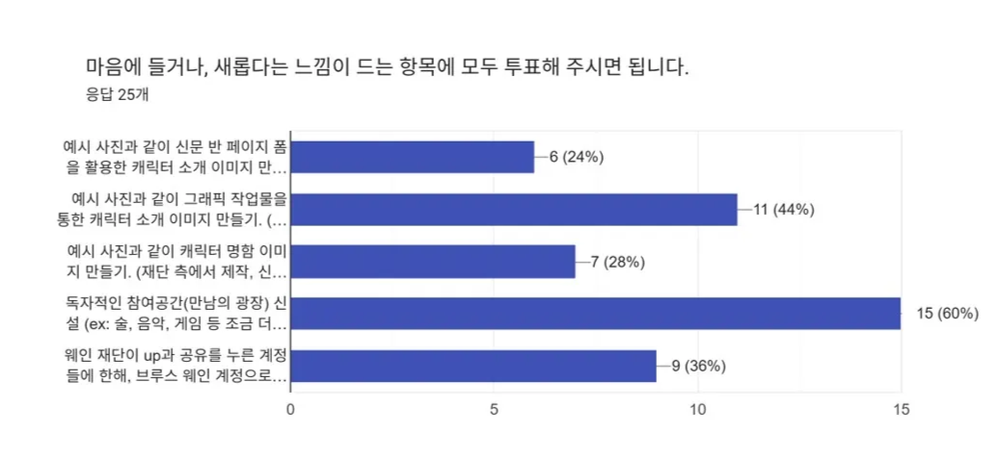

Wayne Foundation instruction
웨인 홍보재단 이용 안내
Classification: All / Author: B. Wayne
정식 재단명: 재단법인 Bruce Wayne Promote Foundation (브루스 웨인 홍보 재단)
설립목적: KBU(Kakaostory Bot Universe) 내 모든 캐릭터의 비영리적 홍보 및 교류의 장을 만들기 위하여 설립
설립일: Foundation St. Jan 5th 2020
설립자: Bruce Thomas Wayne
운영진
- 이사장: Bruce Wayne
- 관리실장: 공석

재단 주요 정책
- 기본 홍보 정책은 여타 홍보봇과 동일합니다. (공유, UP)
- 25년 7월 수요조사에 따라 공식적으로 8월 1일부터 가장 투표율이 높았던 세 가지 제안 중 두 가지 안을 신규 정책으로써 도입합니다.

현재 웨인 재단의 만남의 광장을 개설하여 운영 중입니다.
현재 ‘브루스 웨인 계정으로 동시 홍보 진행’ 정책 또한 운영 중입니다.
가맹 분점 홍보하는 감자씨도 운영 중입니다.
하루 안팎으로 글삭과 재언급을 자주 반복하는 분들은 의도적으로 스루하고 있습니다. 본 재단은 지워진 홍보지를 매일 정리하고 있기 때문에 잦은 언급은 지양 부탁드립니다.
자료 출처
재단 홍보와 관련된 모든 홍보자료는 프리픽이라는 사이트에서 가져와 오너가 손수 작업한 개인 작업물입니다.
본 재단의 로고 및 커버 사진 등도 모두 위와 같습니다.
본 계정은 수익을 창출하지 않는 2차 창작에 속하나 이를 도용하는 것은 엄금합니다.
모든 안내사항을 읽어주신 여러분들께 감사드립니다. 즐거운 하루 보내시길 바랍니다. :)